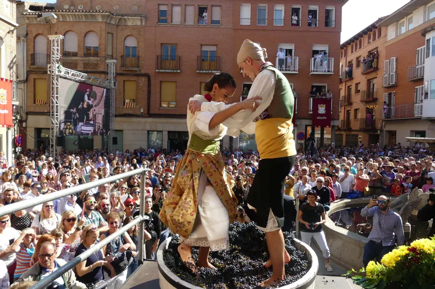

Ya conocemos las fechas oficiales para el evento más esperado del año en Cariñena. La Gran Fiesta de la Vendimia 2026 promete ser la más ambiciosa hasta la fecha, con actividades que celebran nuestra historia y el futuro de nuestra tierra.
Los próximos días 26, 27 y 28 de septiembre, las calles de Cariñena y los jardines de Tierra Vieja se vestirán de gala para recibir a miles de visitantes. La festividad, declarada de Interés Turístico Nacional, marca el inicio de la recolección de la uva Garnacha y sirve como punto de encuentro para amantes del vino de todo el mundo.
Este año, el programa de actos incluye desde el tradicional pisado de la uva y la obtención del primer mosto, hasta conciertos al aire libre entre las vides y una zona gastronómica donde los mejores chefs de la región maridarán sus platos con nuestras añadas más exclusivas.
"La vendimia es el corazón de nuestra bodega. Abrir nuestras puertas durante esta fiesta es nuestra forma de compartir el alma de Tierra Vieja con nuestra comunidad." — Miguel Ángel Lorent, Director de Viticultura
Lo más destacado de esta edición
Para la edición 2026, hemos diseñado tres experiencias únicas que permitirán a los asistentes sumergirse por completo en la cultura del vino:
Paseo de Sabores
Una cata itinerante por cinco rincones secretos de la bodega, maridando cada vino con una tapa diseñada para resaltar su carácter.
Vino y Melodía
Sesiones de música en vivo al atardecer en nuestra terraza mirador, con vistas panorámicas a los viñedos que inician la cosecha.
Taller de Pisado
Recuperamos el método tradicional de pisado de uva en tinos de madera para que mayores y niños vivan la historia de Cariñena.
Una tradición que se renueva cada año
Aunque la Fiesta de la Vendimia tiene raíces profundas en la historia de Cariñena, en Tierra Vieja apostamos por una celebración que mire al futuro. Por eso, este año hemos integrado tecnologías interactivas para que los visitantes puedan conocer el estado de maduración de nuestras parcelas en tiempo real a través de sus dispositivos móviles.
La música también será protagonista, con un cartel que combina folclore aragonés renovado y ritmos contemporáneos, creando la banda sonora perfecta para degustar nuestros vinos bajo las estrellas. El evento culminará con el "Brindis de la Ilusión", donde cientos de personas alzaremos nuestras copas por una cosecha 2026 memorable.
"No hay mayor honor que ver cómo nuestra tierra se convierte en el escenario de una alegría compartida por todos." — Carlos Benedí, Enólogo

Información práctica y reservas
La entrada al recinto principal de la bodega será gratuita durante los tres días. Sin embargo, para participar en las experiencias exclusivas como el Paseo de Sabores o los talleres de pisado, se requiere reserva previa debido al aforo limitado.
Puedes consultar el programa completo de actividades, los horarios de los autobuses lanzadera desde Zaragoza y realizar tus reservas a través de nuestra sección de Eventos. ¡Acompáñanos a celebrar la vida y el vino!